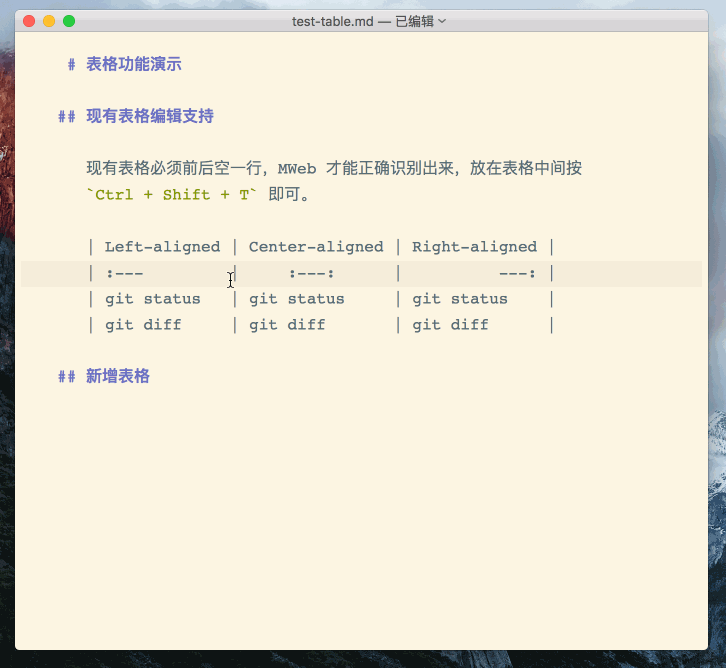
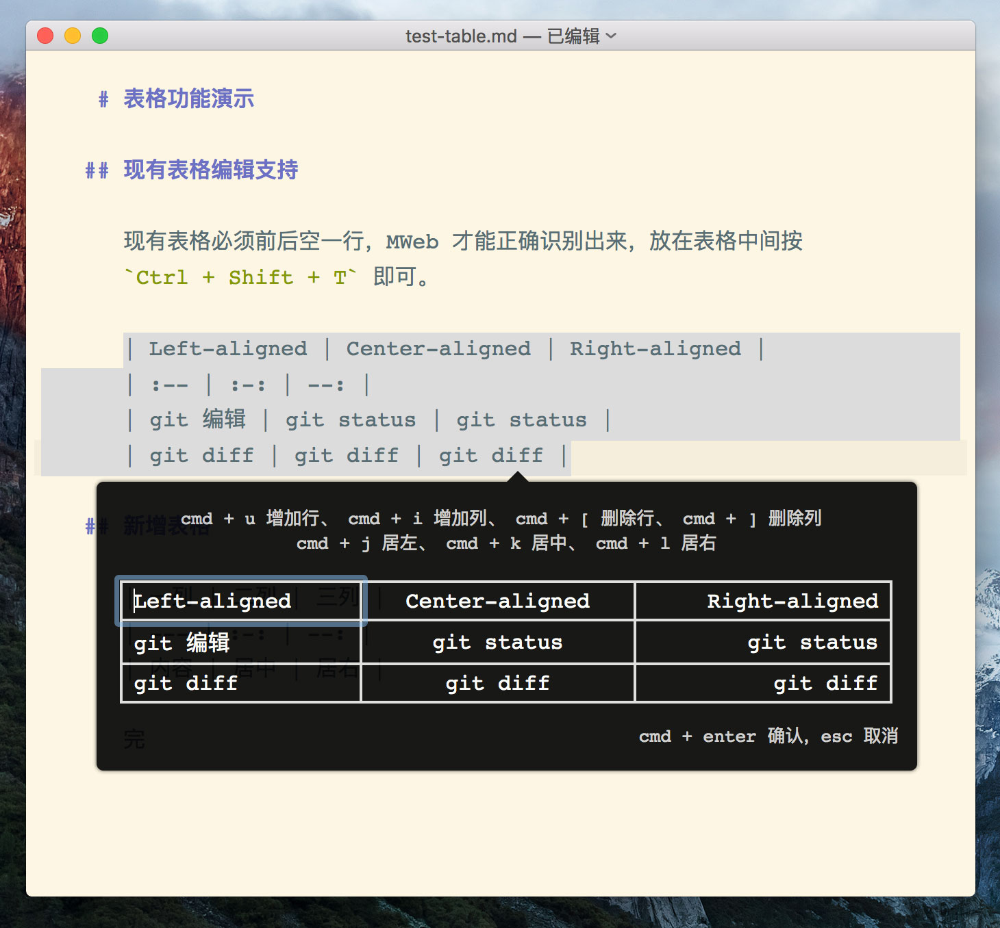
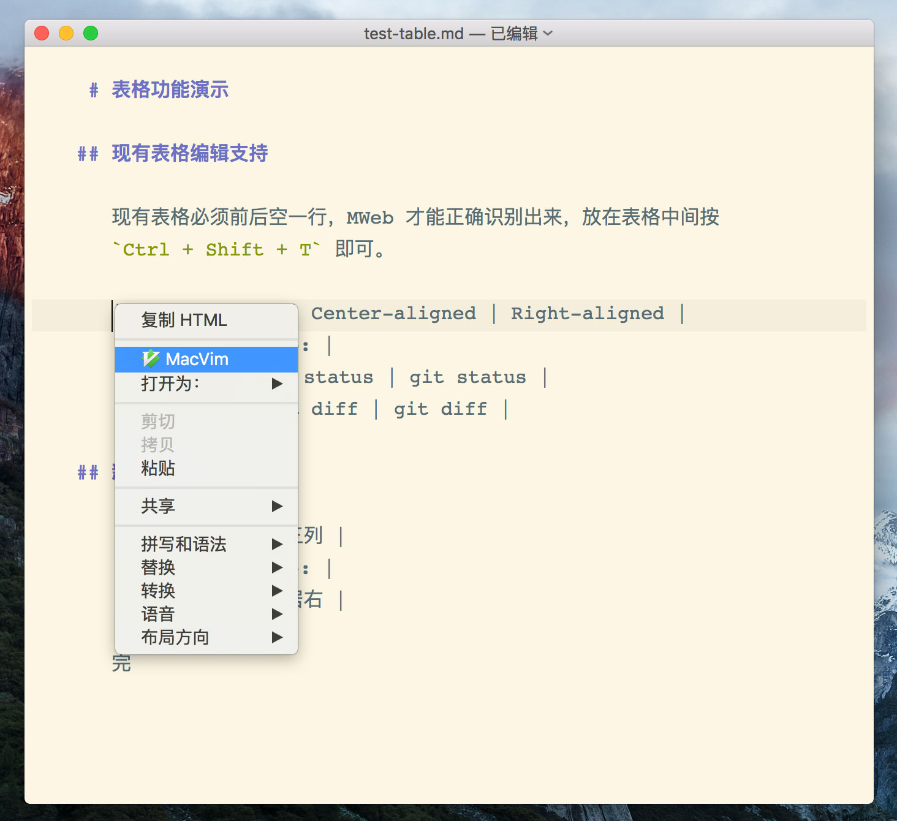

目前更新情况为：7/6 2.0.1 版发布、7/8 2.0.2 版发布、7/9 2.0.3 版发布、7/11 2.0.4 版发布、7/12 2.0.5 版发布。
这次 2.0 版好像没什么重大 Bug，这个2.0.1 版本的更新如下：
CMD + Shift + [ 和 CMD + Shift + ] 改为前一个 Tab 和后一个 Tab，缩进快捷键请使用选中后按 Tab 和 Shift + Tab 进行前后缩进。修正选择后按 Tab 键的 Bug。CMD + Shift + N直接下载 2.0.1：>>点此下载<<
已安装 2.0.0 版的应该会收到更新提示的，也可以手动点菜单：MWeb - 检查更新。
2.0.2 版增加了两个要截图说明的功能，一个是表格插入和编辑的改进，请看以下 gif，可以知道大概的操作方式：

再放一张静态的图，看图即知，是全键盘操作的。

另一个就是外部模式中在编辑器右键，可以用另外编辑器打开当前的编辑的 Markdown 文档了，如下图：

open -a MWeb 这个命令打开， 打开文档就是 open -a MWeb xx.md，所以这功能不用做了。之前说的 PlantUML 功能，现在决定不做了，因为考虑到现在 MWeb 已经足够复杂了，并不合适再增加新功能，相反，要减少功能和再优化现有功能。
直接下载 2.0.2：>>点此下载<<
已安装 2.0 版的应该会收到更新提示的，也可以手动点菜单：MWeb - 检查更新。
2.0.3 版主要是增加 Mavericks 支持，另外就是修正文档库拖拽排序的 bug。
直接下载 2.0.2：>>点此下载<<
2.0.4 版更新情况如下：
视图 - 列表样式 中设定。修正 通用设置 - 主题样式 中设置列表时间格式无效问题。编辑 - 粘贴为纯文本 功能。直接下载 2.0.4： >>点此下载<<
2.0.5 版几乎是这次测试的最后一版了，这次修正有：
直接下载 2.0.5：>>点此下载<<